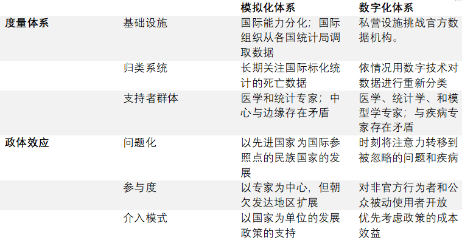
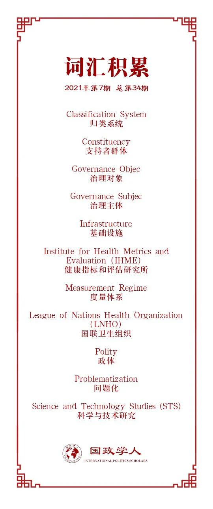

收录于合集

作品简介
【作者】 Luis Aue，柏林自由大学、柏林社会科学中心（WZB）研究员
【编译】 肖龙（国政学人编译员，佛罗里达大学博士研究生）
【校对】 聂涵琳
【审核】 朱晓洁
【排版】 董诗
【美编 】杜丛竹
【来源】 Aue, L. (2021). “How Do Metrics Shape Polities? From Analogue to Digital Measurement Regimes in International Health Politics”, International Political Sociology , Volume 15, Issue 1, March 2021, Pages 83–101, https://doi.org/10.1093/ips/olaa018.
期刊简介
《国际政治社会学》（ International Political Sociology ）是国际研究联合会（International Studies Association）旗下的七本学术期刊之一。致力于为社会学家，国际关系学家和社会政治理论家提供富有成效性的合作和产出。该期刊的2020年影响因子为2.438。
Luis Aue
度量指标如何塑造政治？
国际卫生度量体系从模拟化到数字化的转变
How Do Metrics Shape Polities?
From Analogue to Digital Measurement Regimes in International Health Politics
内容提要
本文分析了负责产出国际卫生指标的度量体系从模拟化到数字化的历史变迁。运用历史比较，本研究展示了各个度量体系在塑造世界卫生制度中所拥有的深远影响。作者主要基于科学和技术研究来构思度量体系，认为度量体系是产生国际卫生指标的社会- 技术组合。作者以政体理论为基石，认为这些度量体系在国际政治中的参与、问题化、以及干预方式中发挥了效应。本文着重分析了模拟化国际卫生度量体系是如何在二战之后获得支配地位的。基于国家统计基础设施以及国际组织，这种体系在将国际卫生政治问题化的同时沿着北半球的发展道路引导各国，且仅限医学和统计学专家的参与。数字化体系自90年代起逐渐具有影响力，根植于私人研究所，致力于卫生指标的数字化重算。这种体系将国际卫生政治塑造为一个可以持续搜索未经重视的问题、扩大被动使用者的参与度、且支持成本效益干预的领域。这篇文章为卫生领域的国际政治社会学做出了概念上和经验上的贡献，对诸如度量体系之类的社会- 技术组合如何塑造国际政治做出了讨论。
文章导读
01
引言
信息时代下，新型的数字化科技产物层出不穷。小到个人的日常锻炼，大到社会的整体安全，都可以运用数字演算以及模拟的方式来监督和优化。数字化技术也催生了新的资本模式，使用户体验成为了盈利的原材料。然而，令人惊讶的是，这种数字量化对于国际政治意味着什么，却很少有人探究。虽然在国际社会学以及统计学领域已经有了一定的针对此问题的讨论，目前却并没有能够在国际政治中也开展相似研究。本文由此尝试填补这种空白。
作者探讨了在国际卫生政治中，数字量化是如何重塑国际卫生政治的。通过对国际卫生治理中的数字量化和模拟量化行为进行历史比较，作者分析了两种国际度量体系（measurement regime）的作用以及效应。研究者们必须破译国际卫生政治作为一个部分自主的社会实践领域的内含逻辑。在国际政治中，专家学者们能够提高某些问题的知名度并将其提升到国际舞台，各种业内人士也可以为国际卫生援助创建新的空间。各种指标和准则可以为国际政治提供治理对象。基于这些假设，本文探究了国际卫生治理的量化实践是如何塑造基本逻辑的，而这种基本逻辑决定何人何物可以登上全球舞台。
02
度量体系的政治效应
进行科学与技术研究（science and technology studies, STS）的学者们将一个度量体系理解为一个产生度量指标的实践的集合。这一集合拥有特定的支持者或协调者，一个归类系统，以及一套基础设施或行政机构。
归类系统 （Classification System）：为人类行为提供一定的秩序和稳定性，为国际卫生治理提供必要的标准和原则。在国际卫生度量体系中起到指导数据收集的作用。
支持者群体 （Constituency）：是国际卫生度量体系中产生指标的行为者，且不仅限于业内人士群体，也绝不仅限于单一的知识或身份群体。比如说，在一个度量体系中，行政管理人员和统计专家可能在工作内容上没有太多共同点，但他们都同属于该体系的支持者群体。
基础设施 （Infrastructure）：度量体系由人的实践活动组成，存在于物质环境当中。因此，其必须满足物质条件的需求，比如人员工资、办公场地、经费账户等。基础设施还包括数据收集和统计的方式。一套基础设施和行政机构是度量体系的基石，使体系中的各个部分保持连结和稳定，让实践中的集体运作和常规互动成为可能。
本文指出，源于度量体系的量化实践可以影响国际卫生治理的政治结构（polity）。一个政治结构的组成取决于其针对治理对象（governance object）的定位。换言之，政治组织内的各个行为者拥有一系列相同的治理对象和相似的目标。比如，气候治理便是一个将治理对象定义为气候问题的政治组织；这个政治组织可以被理解为一个以气候问题为对象的政治实践领域，全球气候在该领域中被政治化和问题化。在一个单独的政治组织中，行为者便是面向治理对象的治理主体（governance subject）。每一个政治组织中都有其独特的治理主体和对象之间的关系。
政治组织理论很适合被用来分析度量体系的各种效应。运用政治组织理论，我们可以区分度量体系在国际政治的不同层面上的效果。第一，度量体系可以塑造某个治理对象在国际政治中的形象。度量体系可以运用量化方法来让一个政体的行为者“看到”它们的治理对象，并使之问题化。第二，度量体系可以影响治理主体的参与并发挥参与效应。根据度量体系的不同，政府之间会出台不同的政策应对，支持者或协调者们也会产生不同的度量指标和规定。第三，度量体系决定了在一个政体中的治理主体和治理对象间的关系。体系中的量化实践决定了治理主体如何对治理对象采取行动。
03
国际卫生政治的两大体系
作者运用历史定性分析，从一手和二手资料中比较了两种度量体系及其政治效应。针对模拟体系的分析，政治科学、社会学和历史学科已经贡献了比较完善的学术研究。此外，作者还分析了世界卫生组织自从二战以来的统计年鉴。针对数字体系的分析则更多地依赖于第一手资料，作者使用了历任和现任公共卫生研究人员的发表成果来建立详细的数字化度量体系特征。作者认为，模拟化度量体系的出现大致是在19世纪中期，一直到20世纪90年代都稳固地主导着国际卫生指标和数值的生产。近年来，数字化度量指标明显地继承了前者的地位，成为产出国际卫生指标的主要网络。不过，旧体系的部分元素仍然融入了新体系。
表一：度量体系及其政治效应（来源：译者从原文摘译）

模拟化体系（及其政治效应）
模拟化度量体系的归类系统（classification system）最早可以被追溯至19世纪中期，并明确专注于测量疾病所造成的死亡率。在洛克菲勒基金会的资助下，国联卫生组织（League of Nations Health Organization, LNHO）下属的流行病情报与公共卫生统计局自1921年来便开始计算基本死亡数据，并推出了“世界卫生统计”系列报告。不过，这一套系统十分脆弱，在随后的世界经济危机中便分崩离析了。第二次世界大战之后，新成立的世界卫生组织重新开始了年度统计报告的推出，联合国也尝试以联合国组织为计算中心建立“世界统计系统”。在这一套统计设施中，全世界的医生们将死亡数据登记到标准化的国际表格中。这一套原始数据将进一步被各国的统计办公室汇总到卫生指标中。为了给这一套统计系统在全球范围内提供支持，世卫组织在各国设立统计委员以协助建立以国家为中心的统计基础设施。这一套设施主要集中于北半球及发达国家。在发展中国家和前殖民地地区，由于数世纪的殖民统治和对建立正常统计设施的漠不关心，公共卫生统计系统一直非常匮乏。
世卫组织所使用的度量体系建立在以国家为中心的、极度标准化的统计系统上。模拟化度量体系的归类系统为全世界的医疗从业者们提供了一系列标准化的归类方式，使卫生指标的国际汇总成为可能。这一体系的行为者们则以处于计算中心的统计和医学专家或官员为主。不过，位于国际层面上的这些人与处于基层统计设施的各国医疗从业人员截然不同，对于当地医生们来说，将数据采集到归类系统中是一种低回报的例行公事，且很少受到审查。在欠发达地区，卫生数据的提供者更是缺少标准化数据采集的培训和知识，与世卫组织的想象差别甚大。
因此，作者指出，世卫组织所用的模拟化度量体系虽然十分稳定，但是其内部碎片化也从各个角度影响了国际卫生政治的发展。首先，模拟化度量体系依赖于各国的官方统计机构所公布的数据，因此可以较为出色地反映出一个国家在较长时间内的卫生发展状况。这在一方面可以使国家层面的公共卫生问题化（problematization），另一方面，在医疗实践上深度依赖国际指标以及过分强调国家间的高度可比性，也让任何从该标准脱离的趋势被视为亟需解决的问题。其次，该度量体系由统计和医疗专家组成，并使国际卫生政治成为了一个尤其青睐这些人群的参与的领域。同时，来自北半球及发达国家的行为者们占据了体系内行为者的多数。最后，世卫组织在大力延展该体系的全球卫生统计和计划能力以及扩大参与时，也不可避免地有将发达地区的意志强加给其他地区的倾向。
数字化体系（及其政治效应）
进入90年代，新型数字量化方法实现了许多新指标的计算，新型方法和指标的出现则代表了不同的归类系统、支持者或协调者、以及计量基础设施的出现。新兴的数字估算指标于90年代初期被用于世界银行和世卫组织的卫生干预的成本效益研究，并曾短暂地容纳归入到了后者的体系中。2007年，比尔·盖茨和比尔及梅琳达·盖茨基金会注资一亿多美元在西雅图成立了健康指标和评估研究所（Institute for Health Metrics and Evaluation，IHME，以下简称IHME），由前世卫组织官员及前哈佛大学医学教授克里斯·默里（Chris Morray）担任所长。在资金支持下，IHME用数字化指标挑战了世卫组织在出台指标方面的权威，有疾病专家组成的庞大顾问网络以提供支持。另一方面，为了在国际组织外面寻求治理才能，世卫组织也在2018年与IHME签署了谅解备忘录，接受了与自家的指标相比，数字化体系提供的指标更对自身内部重组有价值。
新的数字化体系可以用大数据方法来充分收集从健康调查、经济数据、科学论文、死亡率数据等来自于模拟化体系的各种信息。之后，大量信息会被算法和经济计量方法重新归类，并由此产生出新的“正确”数据。在重新归类的过程中，国家有可能被错误地划分为正在爆发疾病并需要手动查错。此时，IHME和相关研究设施会公布每一个信息来源的文件，提供网上可查的信息来源目录以及每一步分析用的程序代码。这让数字化体系的运作对公众更加透明。
与模拟化体系相似，数字化体系中也包含了来自医学和人口统计学的专家。除此之外，还有众多来自世行和哈佛等精英单位的行为者，多数为白人男性。世卫组织的模拟化体系为各个病种的专家们提供了针对该病种的死亡率数据，可是数字化体系的重新归类却挑战了这些指标，使数字化建模部门与疾病专家们产生重大矛盾。对传统专家权威的挑战使得新体系的融入困难重重，是该体系早期的一个主要阻碍。可以说，数字化体系只有在盖茨基金会的强大支持下才得以度过难关。
模拟化体系聚焦于以国家为单位发展的公共卫生问题，而数字化体系将国际卫生治理塑造为一个持续搜寻被忽略的问题以问题化。不可否认的是，数字化体系的发展与国际卫生政治中的几次议题变迁相吻合，使得一些以前未受重视的问题能够为世人熟知，比如在90年代，心理健康问题在数字化指标上获得了重要性。一方面，数字化体系支持数字建模和大数据的收集，对以国家为单位的统计机关和队伍依赖性甚小，传统的国家单位的重要性降低。因此，数字化体系的出现也使得国际社会对于欠发达地区的统计工作培训的兴趣减弱，其私有性质也使其更少依赖于官方公共卫生机构，不利于大规模、国家间的介入措施。
另一方面，数字化体系的参与者不仅限于专家群体，也有“社区成员，知识中介人，政策制定者，以及卫生机构”。在分析结果上，用可视化方式将处理过的卫生数据传播给公众，扩大了参与度和透明度。与聚焦于长期国家发展道路的模拟化度量体系不同，数字化体系主张研究并发掘成本效益高的介入措施，并投入使用，这也影响了国际卫生治理中的介入模式。虽然在一开始被不少成员国反对，但世卫组织最终接受了数字化体系的价值观。
04
结论
本文中，作者比较了目前国际卫生政治中两大较有影响力的度量体系。他将度量体系视做一系列量化实践的集合，拥有基础设施，归类系统，以及支持者或协调者群体。两种度量体系都从不同方面影响了参与的人群，被问题化的议题，以及在卫生治理中的介入模式。比如，模拟化度量体系将国家发展偏离西方模式视作国际卫生的主要问题，而数字化度量体系则可以发掘未经重视的问题并提出成本效益高的解决方式。结合近年来研究国际卫生社会学的呼吁，作者指出了探究量化行为的重要性，以及国际卫生治理的基本特征，即朝着数字化转变的量化实践有助于国际卫生治理的重构。
译者评述
本文从社会学的角度分析了目前在国际公共卫生治理领域的两大量化度量体系：模拟化体系和数字化体系。作者说明了在不同的体系下，其作为一个治理机构所带来的效应和影响也会有所不同。其中，模拟化体系以联合国系统内的世界卫生组织为首，主要是通过各国的统计署来收集汇总数据；数字化体系则以盖茨基金会资助下的IHME组织为主导，通过更加多元化的信息来源以及数字建模来监测世界健康状况。两者在组织设计上的截然不同，导致了它们各自聚焦的问题、招募的参与人群、以及所提供的解决方案都有很大出入。作者用科技研究和社会学里的理论，比较有说服力地证明了这一点。
需要说明的一点是，笔者并没有在文章中发现类似“舍A求 B”的建议。相反，在关于度量体系分析中，作者比较中立地探讨了两大系统的利与弊，并最终给出了需要保证各自优点并加以合作的政策处方。模拟化度量体系虽然视北半球和发达地区为主要发展模式，但是其对于南半球以及欠发达地区的公共卫生量化实践无疑是重要的。否则，在发展程度较落后的地区，连最基本的公共卫生统计都将因为缺少国际合作以及培训而难以展开。而数字化度量模式由于其私募性质和对效益的追求，或许会尤其甚至仅支持私人行为者的数据互动，这对于放眼全球的卫生治理是没有好处的。
因此，一个良性的关系应该建立在两种度量体系相辅相成，并以各国官方数据机构为基础的公共卫生统计系统上。本文作者站在发达国家的角度上，分析了主要立足于美国的IHME及其相关机构。然而，各国针对私立研究机构及其资金来源的法规不同，公众能否真正取得并监督数字化体系的统计工作也取决于该国的基础设施建设和政府能力。在国家统计能力亟待发展的情况下，国际组织的协助是必要的。
全球新冠疫情的爆发为21世纪的国际卫生治理带来了空前的挑战，不少国家对于发病人群和死亡人数的统计亦因为政府能力较弱而未能提交满意的答卷。另一方面，中国政府联合世卫组织快速响应疫情发展态势，合作抗疫，并在统计数据、研制疫苗、病毒溯源等工作上取得了国际瞩目的进展。这证明了世卫组织需与各国政府深化合作以达成卫生治理的理想效果。本文中两大度量体系的融合，也需要国际组织和私立机构、官方和非官方之间的持续沟通。
词汇整理

文章观点不代表本平台观点，本平台评译分享的文章均出于专业学习之用, 不以任何盈利为目的，内容主要呈现对原文的介绍，原文内容请通过各高校购买的数据库自行下载。
好好学习，天天“在看”
国政学人
支持学术公益与知识传播
微信扫一扫赞赏作者 __赞赏
已喜欢，对作者说句悄悄话
取消 __
发送给作者
发送
最多40字，当前共字
上一页 1/3 下一页
长按二维码向我转账
支持学术公益与知识传播
受苹果公司新规定影响，微信 iOS 版的赞赏功能被关闭，可通过二维码转账支持公众号。